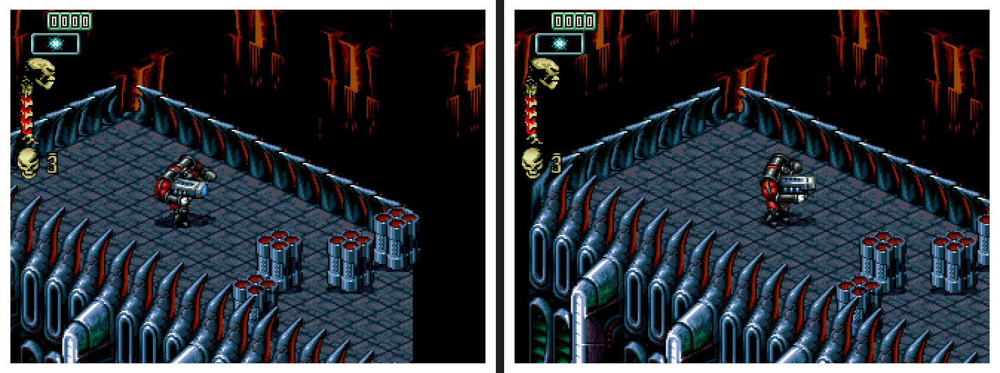

Copperline 1.1.0: period hard drives, EC CPUs and a faster JIT
Copperline 1.1.0 is the first feature release of the 1.x series. Since 1.0, new features have collected on the development branch while fixes shipped as 1.0.x releases. Everything that built up there works with existing configurations and save states, so it ships now as 1.1 and brings every 1.x fix since 1.0.1 with it.
Period hard-drive timing
Until now every hard-disk transfer finished within the access that started it. timing = "period" on [ide], [scsi] or [lide], or Hard drive timing on the configuration screen's Emulation page, times each drive like the one its machine shipped with: a Conner CP2064 in the A1200, a Seagate ST3144A in the A4000, a Quantum LPS 52S in the A3000, and so on. Copperline models the seek curve, rotational latency, zoned media rates, read-ahead, write caching, spin-up, standby and head parking, and each controller reports "not ready" the way its hardware does. There are 22 built-in drives from the manufacturers' manuals, [[drive_profile]] tables add your own, and the default stays instant. See drive timing.
68EC030, 68EC040 and 68EC060
The three MMU-less EC parts can be chosen as the CPU. Each answers the MMU instructions as its silicon does, the 68EC040 and 68EC060 have no FPU, and copperline-import-uae imports them from WinUAE, Amiberry and FS-UAE configurations, with three older CPU-mapping bugs fixed.
A faster JIT
- A "fastest" CPU speed.
[cpu] speed = "fastest"lets the JIT's clock rise while the host has time to spare, keeping the chipset in real time, like WinUAE's "Fastest possible". It is not reproducible; the default,fixed, is unchanged. - Fast RAM and ROM code. The JIT's direct memory window now works with the cache models on, follows the bank the code runs from and covers every RAM and ROM region, and code there runs in batches up to the next hardware event.
- Heavy disk I/O.
copperhf.deviceand the SCSI disk commands move each request in one host read or write. One Kickstart 3.2 test went from 154 seconds to 20 for 40 emulated seconds of large reads.
Thanks to dlundqvist for the report and for testing each change.
A500 timing from real hardware
Seppo Tomperi measured a PAL A500 with test ROMs on OneROM and a logic analyzer, and corrected CIA timer start, reload and readback, the serial port and port B timer outputs, interrupt latching, how the CPU samples interrupts and counts clocks in STOP, when CPU writes to chip RAM land against DMA, and playfield collisions. New test programs check each one on every build.
Setup, display and input
- A
copperline.tomlbeside the executable boots straight into its machine, so an installation can carry its own default. - Relative ROM, disk and CD paths not in the working directory are looked for in the
[paths]media folders. - The launcher's Save dialog has a Save button for the file you last loaded or saved, and file dialogs remember their folders.
- RTG screens scale to whole multiples of the display, and menus and overlays draw over them without dropping the resolution.
- The captured mouse moves the pointer the same distance at any window size, and keys replayed when the window gains the focus no longer stick on X11 and Windows.
- Windows now has per-user installers for x64 and ARM64, alongside the portable ZIPs.
Fixes and other changes

- Skeleton Krew's scenery no longer jumps while scrolling on the CD32: on ECS and AGA a DDFSTRT below
$18only arms the fetch, which starts at$18. Thanks to Nicolas Ramz for the report. - HOSTFS volumes and the shared clipboard are no longer offered as boot devices on Kickstart 3.x.
- Old-format Nero
.nrgCD images mount. - The A2065's LANCE decodes its RAM by address line 15 and applies the CSR3 byte-swap bit, as on a real A3000. Thanks to Tinic Uro.
--eject-disk-afterejects a floppy on schedule in headless runs (thanks to Nicolas Ramz), and the control protocol'sdisk.fault.*methods inject deterministic drive faults (thanks to Simon Dick).- The bundled AROS ROM is refreshed, the
m68kCPU core moves to 0.15.0, andwasmtime,rustls-webpki,ctutilsandzstdtake security updates.
Before upgrading
- Every netplay peer needs 1.1.0.
- Recreate RetroArch save states after updating the core. Desktop save states from 1.0.x still load, though they continue under the corrected timing; 1.1.0 states do not load in 1.0.x.
- Emulated timing has moved a little on every machine, so headless scripts tuned to an exact frame may need new timestamps.
- A
copperline.tomlbeside the executable now takes over from the saved default.--factoryskips it. - 1.0.x refuses configuration files that use the new settings.
Thanks to the patrons who pay for the hardware used to check the emulation, to Seppo Tomperi, Simon Dick, Nicolas Ramz and Tinic Uro for code, and to dlundqvist and everyone who reported problems.
Download Copperline 1.1.0 Try in your browser
Downloads cover macOS, Linux x86-64, Windows x64/ARM64 installers and ZIPs, and three RetroArch platforms. Homebrew users can run brew update followed by brew upgrade copperline. The release includes a PDF manual and checksums. Read the full release notes or changelog.